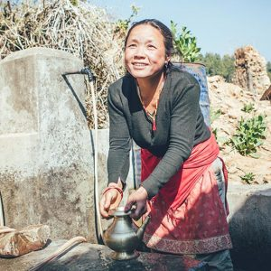
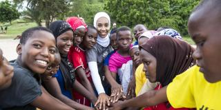
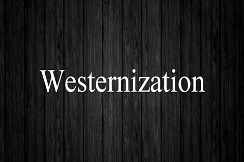

Suffering is universal.Humans are prone to various ways of suffering be it physical, emotional or mentally. It all depends on how we handle the situation since our ability to rise above any kind of suffering is what makes us human after all.In Mans Search for Meaning Victor demonstrates to us how he managed to avoid his own suffering by looking for better means of making his life meaningful.He did not sympathize with himself unlike the other prisoners who became apathetic with their lives and gave up. Victor maneuvered his way out of suffering by deciding to use his suffering as an opportunity to become a better person. He observed how the prison’s environment affected the prisoner’s minds. This shows us that in our normal lives we should try to alleviate our pain by engaging ourselves in productive activities. During these Covid times we should not spend time whining how many people are dying per day but instead try looking for ways to better ways to save more lives.Memories jog our minds for the better. Victor remember his love for his wife and decided to re-write his manuscript which the Nazis had taken away from him. His love for his wife inspired him to keep on going .We can relate this in our daily lives by remembering the people we value the most and how we don’t want to disappoint them.For example Victor's friends who did their best to stay alive for the sake of their loved ones or those who saw their suffering as a test of faith lived longer than those who lost their abilty to see meaning in life.Victor shows us the three ways of finding meaning in life is through work,love and suffering and how we should realize that life asks us to determine our own meaning. The Jar of GratitudeThis class insight teaches us to always be grateful ans stay blessed.It also reminds someone to always highly value and apppreciate the little we got before time makes us aprreciate what we had .
Young People

Young people are always the driving force for any nation.Covid-19 has not only proven to be capable of claiming lives but also making people's livelihoods unstable. It’s up to the young people to take a lead and try to calm the situation instead of lazily idling around. Studies have proven that young people are also know to handle incidences involving paranoia differently but with extra caution. Various ways in which they can engage themselves in include educating their families and friends about Covid precautions like washing ones had at regular intervals. They may also join movements like the Kenya Scouts or St. John’s ambulance and volunteer to help the health workers in some activities like fumigation or distribution of masks and sanitizers.They may also try to innovate new ideas.They may also help they parents back at home.
Colonial

Westernization has its good and bad.Progressive include medicine and infrastructure.Medicine,use of AI robotics in hospitals especially treating the cancer, diabetic and x-ray patients has really played a huge part in saving lives.Two,infrastructure,beautiful inventions and innovations like roads, railways, ships and aero planes have really eased transportation especially that of bulky goods. Networking and communication has played a huge role as one can comfortably communicate with their dears ones who are miles away from them.Non-progressive include beauty and Christianity.Beauty,I normally don’t understand how beauty of an African woman that is skin tone, kinky hair and dummy nose is seen to be ugly whereas straight hair, straight nose and light skin is viewed to be flawless and fairest of them all. This notion is still being held by some people especially some Africans who normally favor light skin over melanin. Some job opportunities are given to some people just because they fit the physical job description appearance of a certain employer.Its high time people understand that everyone flawless in their own way and that beauty goes deeper than the layers of make-up or cosmetic surgery in ones body. Body shaming should stop and we should learn to respect and boost each other’s self-esteem since we all human.Two,Christianity,I usually find it bad how the African Heritage was portrayed as demonic or cultic. Africans were brain washed into believing that behaving in a certain way or pretending to be some else will bring you closer to God. Even right now the divinity is always portrayed as white signifying purity whereas black is portrayed as root of all evil. In the name of Christianity, Africans gave up their own names and heritage and adopted a new lifestyle.